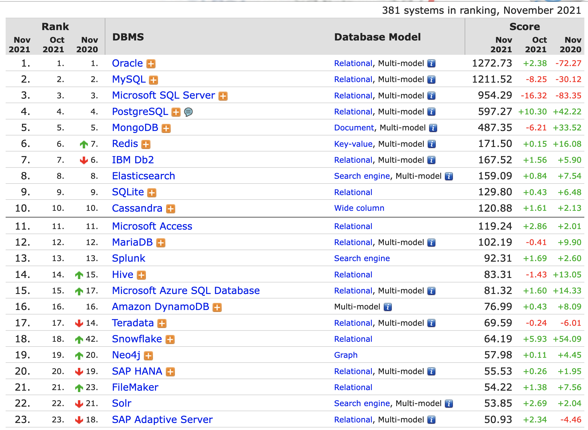
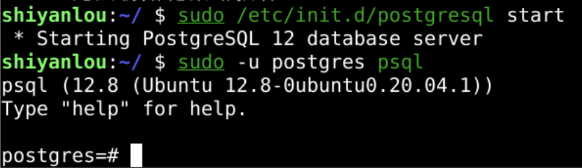
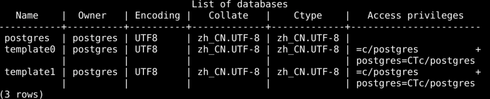
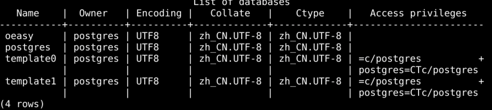
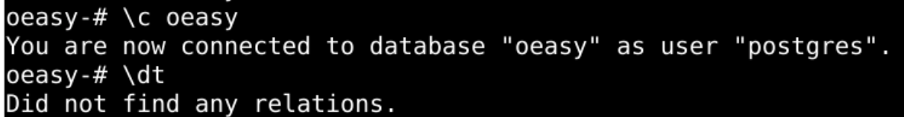
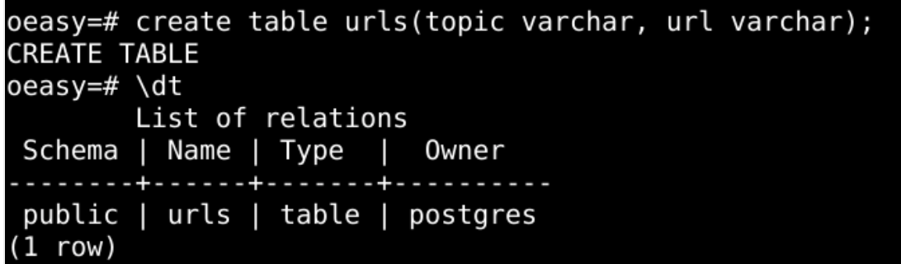
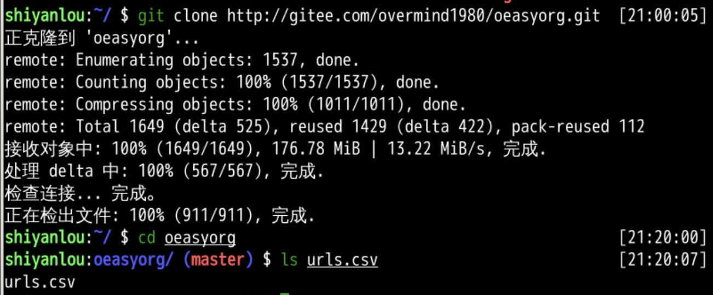
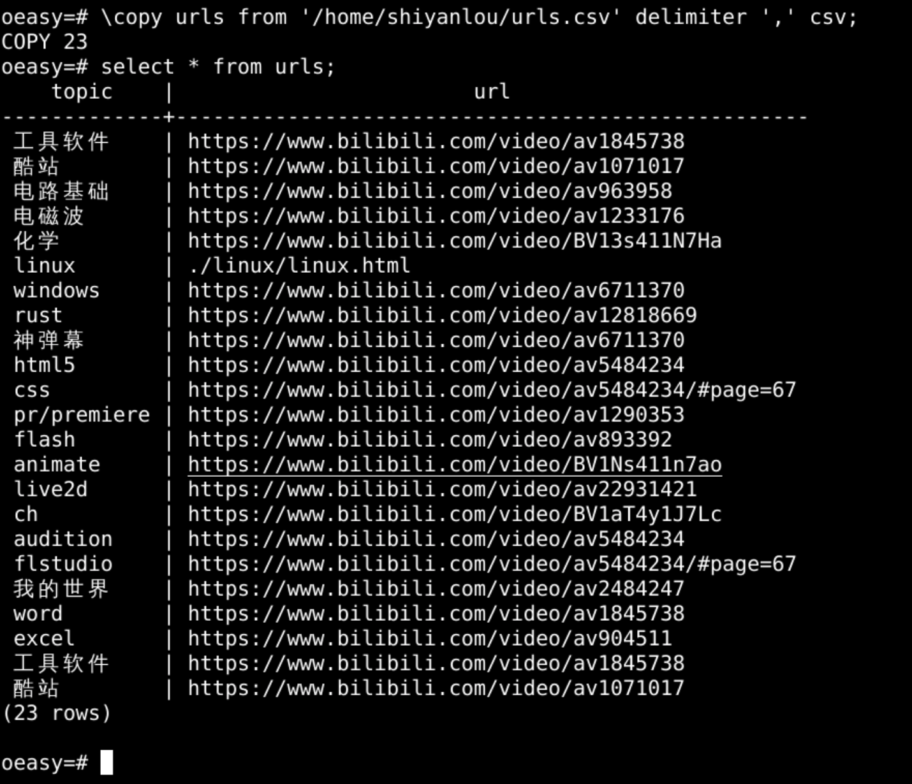
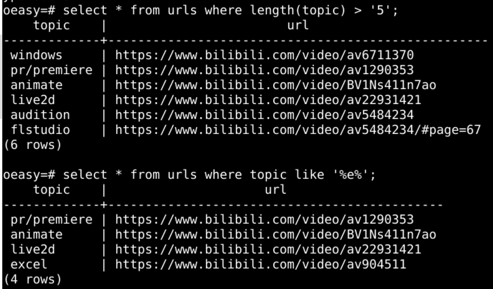

sudo apt update
sudo apt install postgresql
sudo /etc/init.d/postgresql start
sudo -u postgres psql

\l

create database oeasy;
\l

\c oeasy
\dt

create table urls(topic varchar, url varchar);
\dt


\copy urls from '/home/shiyanlou/oeasyorg/urls.csv' delimiter ',' csv ;

select * from urls where topic like '%e%';
select * from urls where length(topic) > '5';
